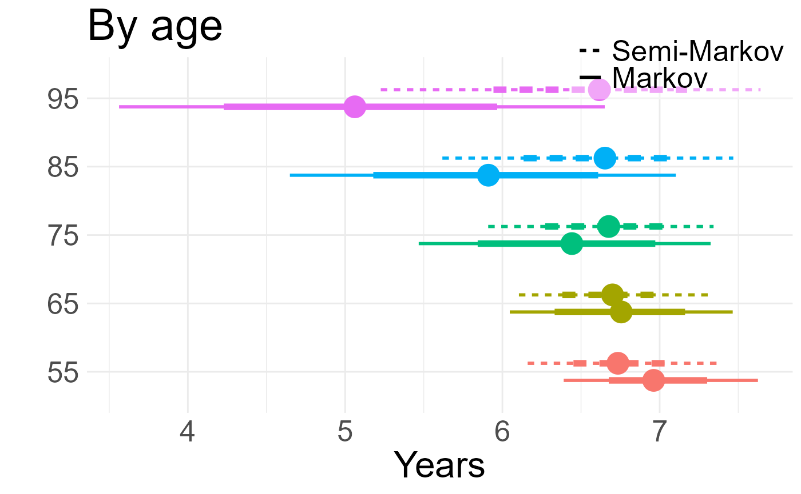
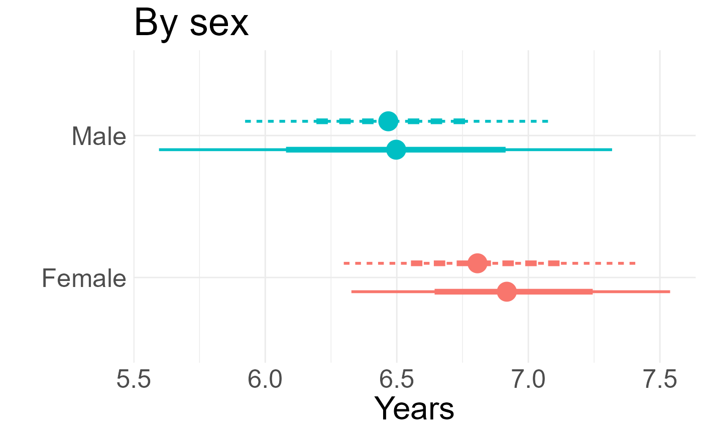
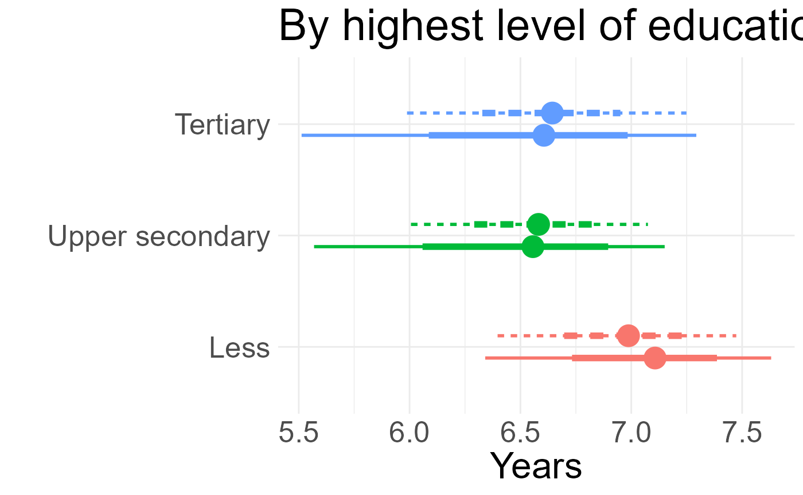
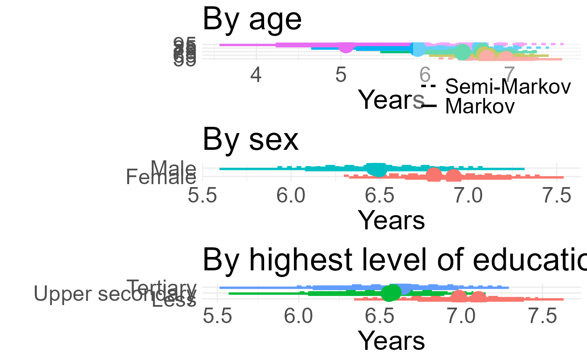

Code for using the msmbayes package for semi-Markov modelling in an application to cognitive function
Christopher Jackson
Source:vignettes/articles/cognitive.Rmd
cognitive.RmdThis file gives the code used for the analysis of the cognitive function data in Section 7 of the paper “Stable and practical semi-Markov modelling of intermittently-observed data” (Jackson).
It is intended to show that the methodology in the paper can be
easily used in practice. It also serves as an aid to learning Bayesian
multi-state modelling using the msmbayes package, in
conjunction with the other documentation given on the package site
Since the original ELSA dataset cannot be redistributed, here we provide a simulated dataset with the same structure and size. The code used for the analysis is the same as in the paper, just with different data. Therefore the code can be run, but the results will be different.
library(msmbayes)
library(msm)
library(tidyverse)
#> ── Attaching core tidyverse packages ──────────────────────── tidyverse 2.0.0 ──
#> ✔ dplyr 1.1.4 ✔ readr 2.1.5
#> ✔ forcats 1.0.0 ✔ stringr 1.5.1
#> ✔ ggplot2 3.5.2 ✔ tibble 3.3.0
#> ✔ lubridate 1.9.4 ✔ tidyr 1.3.1
#> ✔ purrr 1.0.4
#> ── Conflicts ────────────────────────────────────────── tidyverse_conflicts() ──
#> ✖ dplyr::filter() masks stats::filter()
#> ✖ dplyr::lag() masks stats::lag()
#> ℹ Use the conflicted package (<http://conflicted.r-lib.org/>) to force all conflicts to become errors
library(gt)
library(posterior)
#> This is posterior version 1.6.1
#>
#> Attaching package: 'posterior'
#>
#> The following objects are masked from 'package:stats':
#>
#> mad, sd, var
#>
#> The following objects are masked from 'package:base':
#>
#> %in%, match
source("elsa_priors.R")
Q5 <- rbind(c(0, 1, 0, 0, 1),
c(1, 0, 1, 0, 1),
c(0, 1, 0, 1, 1),
c(0, 0, 1, 0, 1),
c(0, 0, 0, 0, 0))
save_files <- FALSE # for local use
if (save_files){
wd <- "../elsa/fakedata"
mbmodc <- readRDS(file=file.path(wd, "mbmodc.rds"))
mbmodscw <- readRDS(file=file.path(wd, "mbmodscg.rds"))
mbmodscg <- readRDS(file=file.path(wd, "mbmodscw.rds"))
}Simulated data
A simulated dataset is loaded here, which was produced by simulating state outcomes from a Markov model fitted to the original ELSA data. The same number of individuals and observation times are simulated as in the original data.
elsa1000 <- readRDS("elsa_fakedata.rds")Basic data summaries
number of observed transitions over an interval between observations. Overall and split by covariates. Note a small number of deaths from each state.
statetable(state="state", time="agey", subject="idauniq", data=elsa1000)
#> # A tibble: 4 × 7
#> fromstate timelag `1` `2` `3` `4` `5`
#> <dbl> <chr> <int> <int> <int> <int> <int>
#> 1 1 [0.000182005853254452,11] 953 680 238 39 61
#> 2 2 [0.000182005853254452,11] 190 558 342 37 20
#> 3 3 [0.000182005853254452,11] 48 220 445 108 10
#> 4 4 [0.000182005853254452,11] 4 17 64 135 7
statetable(state="state", time="agey", subject="idauniq",
covariates = "gender", data=elsa1000)
#> # A tibble: 8 × 8
#> fromstate timelag gender `1` `2` `3` `4` `5`
#> <dbl> <chr> <fct> <int> <int> <int> <int> <int>
#> 1 1 [0.000182005853254452,11] man 377 291 107 20 27
#> 2 1 [0.000182005853254452,11] woman 576 389 131 19 34
#> 3 2 [0.000182005853254452,11] man 73 258 167 11 8
#> 4 2 [0.000182005853254452,11] woman 117 300 175 26 12
#> 5 3 [0.000182005853254452,11] man 15 111 237 47 5
#> 6 3 [0.000182005853254452,11] woman 33 109 208 61 5
#> 7 4 [0.000182005853254452,11] man 4 6 29 50 3
#> 8 4 [0.000182005853254452,11] woman 0 11 35 85 4
statetable(state="state", time="agey", subject="idauniq",
covariates = "age10", data=elsa1000 |>
mutate(age10=cut(agey,c(0,60,70,80,110)))) |>
group_by(age10) |> summarise(n = sum(`5`)) # deaths by age group
#> # A tibble: 4 × 2
#> age10 n
#> <fct> <int>
#> 1 (0,60] 28
#> 2 (60,70] 40
#> 3 (70,80] 21
#> 4 (80,110] 9Markov models in msmbayes
Start with the simplest model with no covariates and default priors, as a sense check. Looking at just the transition intensities, the estimates do not look extreme or uncertain, but this is misleading - when converted to a time scale, the expected times to death (without competing risks) are implausibly large and uncertain.
mbmod <- msmbayes(data=elsa1000, state="state", time="agey", subject="idauniq",
Q=Q5, deathexact=TRUE, fit_method="optimize")
summary(mbmod)
#> # A tibble: 14 × 7
#> name from to posterior mode prior_string prior
#> <chr> <int> <int> <rvar[1d]> <dbl> <chr> <rvar[1d]>
#> 1 q 1 2 0.4050 ± 0.0171 0.404 0.14 (0.0027, 6.8) 0.96 ± 4.4
#> 2 q 1 5 0.0185 ± 0.0030 0.0182 0.14 (0.0027, 6.8) 0.96 ± 4.4
#> 3 q 2 1 0.2018 ± 0.0154 0.201 0.14 (0.0027, 6.8) 0.96 ± 4.4
#> 4 q 2 3 0.3457 ± 0.0181 0.345 0.14 (0.0027, 6.8) 0.96 ± 4.4
#> 5 q 2 5 0.0074 ± 0.0029 0.00692 0.14 (0.0027, 6.8) 0.96 ± 4.4
#> 6 q 3 2 0.3226 ± 0.0232 0.321 0.14 (0.0027, 6.8) 0.96 ± 4.4
#> 7 q 3 4 0.1260 ± 0.0106 0.125 0.14 (0.0027, 6.8) 0.96 ± 4.4
#> 8 q 3 5 0.0059 ± 0.0029 0.00525 0.14 (0.0027, 6.8) 0.96 ± 4.4
#> 9 q 4 3 0.2667 ± 0.0311 0.265 0.14 (0.0027, 6.8) 0.96 ± 4.4
#> 10 q 4 5 0.0182 ± 0.0071 0.0171 0.14 (0.0027, 6.8) 0.96 ± 4.4
#> 11 mst 1 NA 2.3653 ± 0.0970 2.37 3.7 (0.073, 186) 26.11 ± 118.8
#> 12 mst 2 NA 1.8052 ± 0.0761 1.81 2.5 (0.049, 124) 17.41 ± 79.2
#> 13 mst 3 NA 2.2074 ± 0.1250 2.21 2.5 (0.049, 124) 17.41 ± 79.2
#> 14 mst 4 NA 3.5532 ± 0.3949 3.55 3.7 (0.073, 186) 26.11 ± 118.8
summary(mbmod, pars="time")
#> # A tibble: 10 × 7
#> name from to posterior mode prior_string prior
#> <chr> <int> <int> <rvar[1d]> <dbl> <chr> <rvar[1d]>
#> 1 time 1 2 2.5 ± 0.10 2.47 7.39 (0.1468, 371.9) 52 ± 238
#> 2 time 1 5 55.6 ± 8.87 54.8 7.39 (0.1468, 371.9) 52 ± 238
#> 3 time 2 1 5.0 ± 0.38 4.97 7.39 (0.1468, 371.9) 52 ± 238
#> 4 time 2 3 2.9 ± 0.15 2.90 7.39 (0.1468, 371.9) 52 ± 238
#> 5 time 2 5 155.0 ± 59.08 144. 7.39 (0.1468, 371.9) 52 ± 238
#> 6 time 3 2 3.1 ± 0.22 3.11 7.39 (0.1468, 371.9) 52 ± 238
#> 7 time 3 4 8.0 ± 0.67 7.97 7.39 (0.1468, 371.9) 52 ± 238
#> 8 time 3 5 213.3 ± 105.62 190. 7.39 (0.1468, 371.9) 52 ± 238
#> 9 time 4 3 3.8 ± 0.44 3.78 7.39 (0.1468, 371.9) 52 ± 238
#> 10 time 4 5 63.4 ± 25.13 58.5 7.39 (0.1468, 371.9) 52 ± 238Since there is very little information in this dataset about death,
we obtain strong priors on the death rates from national mortality
statistics. Effects of age/sex on death are from the ONS data. Other
effects are weakly informative: a log-normal(0, 1) distribution supports
hazard ratios up to around exp(2) = 7, which we suppose
would be surprising in the context of demographic effects on the risk of
cognitive decline. The priors are stored in the file
elsa_priors.R, and code used to derive them is in the paper
Supplementary Appendix 4 of the paper.
Now include the covariates in the model, still with a Markov model. Age-sex interaction and level of education, modifying all transition rates differently.
set.seed(1)
mbmodc <- msmbayes(data=elsa1000, state="state", time="agey", subject="idauniq",
Q=Q5, deathexact=TRUE,
covariates = ~ gender*y5010 + raeducl,
priors = c(logq_priors, loghr_priors), # init = list(ini),
fit_method="optimize")
if (save_files) saveRDS(mbmodc, file=file.path(wd, "mbmodc.rds"))Standard maximum likelihood estimation in msm appears to
converge, even without any constraints on the parameters, but some
confidence intervals for hazard ratios are implausibly wide.
msmbayes allows use of informative priors to stabilise
computation and support weak data with background information.
msmmod <- msm(state ~ agey, subject=idauniq, data=elsa1000,
qmatrix=Q5, deathexact=TRUE, gen.inits=TRUE,
covariates = ~ gender*y5010 + raeducl,
control=list(fnscale=4000,trace=1,REPORT=1,maxit=10000))
#> initial value 2.687903
#> iter 2 value 2.601472
#> iter 3 value 2.521311
#> iter 4 value 2.489134
#> iter 5 value 2.476426
#> iter 6 value 2.449580
#> iter 7 value 2.443327
#> iter 8 value 2.440236
#> iter 9 value 2.438421
#> iter 10 value 2.436899
#> iter 11 value 2.435912
#> iter 12 value 2.435151
#> iter 13 value 2.434511
#> iter 14 value 2.433812
#> iter 15 value 2.433168
#> iter 16 value 2.432669
#> iter 17 value 2.432313
#> iter 18 value 2.432051
#> iter 19 value 2.431865
#> iter 20 value 2.431717
#> iter 21 value 2.431564
#> iter 22 value 2.431401
#> iter 23 value 2.431233
#> iter 24 value 2.431052
#> iter 25 value 2.430862
#> iter 26 value 2.430696
#> iter 27 value 2.430568
#> iter 28 value 2.430458
#> iter 29 value 2.430331
#> iter 30 value 2.430172
#> iter 31 value 2.430018
#> iter 32 value 2.429919
#> iter 33 value 2.429856
#> iter 34 value 2.429791
#> iter 35 value 2.429717
#> iter 36 value 2.429641
#> iter 37 value 2.429571
#> iter 38 value 2.429503
#> iter 39 value 2.429433
#> iter 40 value 2.429367
#> iter 41 value 2.429311
#> iter 42 value 2.429256
#> iter 43 value 2.429196
#> iter 44 value 2.429141
#> iter 45 value 2.429101
#> iter 46 value 2.429068
#> iter 47 value 2.429025
#> iter 48 value 2.428967
#> iter 49 value 2.428912
#> iter 50 value 2.428877
#> iter 51 value 2.428852
#> iter 52 value 2.428819
#> iter 53 value 2.428773
#> iter 54 value 2.428727
#> iter 55 value 2.428699
#> iter 56 value 2.428683
#> iter 57 value 2.428664
#> iter 58 value 2.428635
#> iter 59 value 2.428604
#> iter 60 value 2.428586
#> iter 61 value 2.428578
#> iter 62 value 2.428571
#> iter 63 value 2.428557
#> iter 64 value 2.428535
#> iter 65 value 2.428506
#> iter 66 value 2.428480
#> iter 67 value 2.428457
#> iter 68 value 2.428426
#> iter 69 value 2.428383
#> iter 70 value 2.428339
#> iter 71 value 2.428314
#> iter 72 value 2.428301
#> iter 73 value 2.428289
#> iter 74 value 2.428270
#> iter 75 value 2.428249
#> iter 76 value 2.428236
#> iter 77 value 2.428230
#> iter 78 value 2.428224
#> iter 79 value 2.428211
#> iter 80 value 2.428187
#> iter 81 value 2.428152
#> iter 82 value 2.428124
#> iter 83 value 2.428109
#> iter 84 value 2.428101
#> iter 85 value 2.428088
#> iter 86 value 2.428068
#> iter 87 value 2.428043
#> iter 88 value 2.428024
#> iter 89 value 2.428009
#> iter 90 value 2.427992
#> iter 91 value 2.427969
#> iter 92 value 2.427948
#> iter 93 value 2.427935
#> iter 94 value 2.427928
#> iter 95 value 2.427917
#> iter 96 value 2.427898
#> iter 97 value 2.427871
#> iter 98 value 2.427848
#> iter 99 value 2.427837
#> iter 100 value 2.427829
#> iter 101 value 2.427816
#> iter 102 value 2.427796
#> iter 103 value 2.427770
#> iter 104 value 2.427748
#> iter 105 value 2.427731
#> iter 106 value 2.427709
#> iter 107 value 2.427672
#> iter 108 value 2.427625
#> iter 109 value 2.427592
#> iter 110 value 2.427581
#> iter 111 value 2.427579
#> iter 112 value 2.427576
#> iter 113 value 2.427570
#> iter 114 value 2.427558
#> iter 115 value 2.427540
#> iter 116 value 2.427527
#> iter 117 value 2.427521
#> iter 118 value 2.427519
#> iter 119 value 2.427515
#> iter 120 value 2.427508
#> iter 121 value 2.427497
#> iter 122 value 2.427486
#> iter 123 value 2.427484
#> iter 124 value 2.427480
#> iter 125 value 2.427478
#> iter 126 value 2.427473
#> iter 127 value 2.427470
#> iter 128 value 2.427468
#> iter 129 value 2.427466
#> iter 130 value 2.427462
#> iter 131 value 2.427459
#> iter 132 value 2.427457
#> iter 133 value 2.427455
#> iter 134 value 2.427452
#> iter 135 value 2.427448
#> iter 136 value 2.427443
#> iter 137 value 2.427438
#> iter 138 value 2.427435
#> iter 139 value 2.427433
#> iter 140 value 2.427431
#> iter 141 value 2.427429
#> iter 142 value 2.427426
#> iter 143 value 2.427423
#> iter 144 value 2.427419
#> iter 145 value 2.427415
#> iter 146 value 2.427411
#> iter 147 value 2.427407
#> iter 148 value 2.427402
#> iter 149 value 2.427397
#> iter 150 value 2.427393
#> iter 151 value 2.427391
#> iter 152 value 2.427390
#> iter 153 value 2.427388
#> iter 154 value 2.427386
#> iter 155 value 2.427383
#> iter 156 value 2.427379
#> iter 157 value 2.427377
#> iter 158 value 2.427374
#> iter 159 value 2.427373
#> iter 160 value 2.427370
#> iter 161 value 2.427367
#> iter 162 value 2.427364
#> iter 163 value 2.427362
#> iter 164 value 2.427360
#> iter 165 value 2.427358
#> iter 166 value 2.427355
#> iter 167 value 2.427353
#> iter 168 value 2.427350
#> iter 169 value 2.427348
#> iter 170 value 2.427346
#> iter 171 value 2.427343
#> iter 172 value 2.427339
#> iter 173 value 2.427336
#> iter 174 value 2.427334
#> iter 175 value 2.427333
#> iter 176 value 2.427331
#> iter 177 value 2.427329
#> iter 178 value 2.427326
#> iter 179 value 2.427324
#> iter 180 value 2.427321
#> iter 181 value 2.427318
#> iter 182 value 2.427316
#> iter 183 value 2.427314
#> iter 184 value 2.427312
#> iter 185 value 2.427309
#> iter 186 value 2.427304
#> iter 187 value 2.427298
#> iter 188 value 2.427295
#> iter 189 value 2.427293
#> iter 190 value 2.427291
#> iter 191 value 2.427288
#> iter 192 value 2.427286
#> iter 193 value 2.427285
#> iter 194 value 2.427284
#> iter 195 value 2.427282
#> iter 196 value 2.427280
#> iter 197 value 2.427276
#> iter 198 value 2.427273
#> iter 199 value 2.427271
#> iter 200 value 2.427270
#> iter 201 value 2.427267
#> iter 202 value 2.427264
#> iter 203 value 2.427262
#> iter 204 value 2.427260
#> iter 205 value 2.427258
#> iter 206 value 2.427256
#> iter 207 value 2.427252
#> iter 208 value 2.427248
#> iter 209 value 2.427246
#> iter 210 value 2.427245
#> iter 211 value 2.427243
#> iter 212 value 2.427240
#> iter 213 value 2.427236
#> iter 214 value 2.427233
#> iter 215 value 2.427232
#> iter 216 value 2.427231
#> iter 217 value 2.427230
#> iter 218 value 2.427228
#> iter 219 value 2.427226
#> iter 220 value 2.427224
#> iter 221 value 2.427223
#> iter 222 value 2.427221
#> iter 223 value 2.427217
#> iter 224 value 2.427215
#> iter 225 value 2.427213
#> iter 226 value 2.427212
#> iter 227 value 2.427211
#> iter 228 value 2.427208
#> iter 229 value 2.427204
#> iter 230 value 2.427201
#> iter 231 value 2.427200
#> iter 232 value 2.427200
#> iter 233 value 2.427199
#> iter 234 value 2.427196
#> iter 235 value 2.427191
#> iter 236 value 2.427185
#> iter 237 value 2.427181
#> iter 238 value 2.427180
#> iter 239 value 2.427179
#> iter 240 value 2.427178
#> iter 241 value 2.427175
#> iter 242 value 2.427172
#> iter 243 value 2.427169
#> iter 244 value 2.427169
#> iter 245 value 2.427168
#> iter 246 value 2.427167
#> iter 247 value 2.427166
#> iter 248 value 2.427166
#> iter 249 value 2.427165
#> iter 250 value 2.427165
#> iter 251 value 2.427164
#> iter 252 value 2.427163
#> iter 253 value 2.427162
#> iter 254 value 2.427162
#> iter 255 value 2.427161
#> iter 256 value 2.427160
#> iter 257 value 2.427159
#> iter 258 value 2.427158
#> iter 259 value 2.427158
#> iter 260 value 2.427158
#> iter 261 value 2.427157
#> iter 262 value 2.427156
#> iter 263 value 2.427156
#> iter 264 value 2.427155
#> iter 265 value 2.427155
#> iter 266 value 2.427155
#> iter 267 value 2.427154
#> iter 268 value 2.427153
#> iter 269 value 2.427152
#> iter 270 value 2.427151
#> iter 271 value 2.427150
#> iter 272 value 2.427149
#> iter 273 value 2.427148
#> iter 274 value 2.427147
#> iter 275 value 2.427147
#> iter 276 value 2.427147
#> iter 277 value 2.427146
#> iter 278 value 2.427145
#> iter 279 value 2.427145
#> iter 280 value 2.427144
#> iter 281 value 2.427144
#> iter 282 value 2.427143
#> iter 283 value 2.427143
#> iter 284 value 2.427142
#> iter 285 value 2.427142
#> iter 286 value 2.427141
#> iter 287 value 2.427141
#> iter 288 value 2.427140
#> iter 289 value 2.427139
#> iter 290 value 2.427138
#> iter 291 value 2.427138
#> iter 292 value 2.427138
#> iter 293 value 2.427137
#> iter 294 value 2.427137
#> iter 295 value 2.427136
#> iter 296 value 2.427136
#> iter 297 value 2.427135
#> iter 298 value 2.427135
#> iter 299 value 2.427134
#> iter 300 value 2.427134
#> iter 301 value 2.427134
#> iter 302 value 2.427133
#> iter 303 value 2.427133
#> iter 304 value 2.427133
#> iter 305 value 2.427132
#> iter 306 value 2.427132
#> iter 307 value 2.427131
#> iter 308 value 2.427130
#> iter 309 value 2.427129
#> iter 310 value 2.427129
#> iter 311 value 2.427129
#> iter 312 value 2.427128
#> iter 313 value 2.427128
#> iter 314 value 2.427127
#> iter 315 value 2.427127
#> iter 316 value 2.427127
#> iter 317 value 2.427126
#> iter 318 value 2.427125
#> iter 319 value 2.427125
#> iter 320 value 2.427124
#> iter 321 value 2.427124
#> iter 322 value 2.427123
#> iter 323 value 2.427121
#> iter 324 value 2.427120
#> iter 325 value 2.427119
#> iter 326 value 2.427118
#> iter 327 value 2.427118
#> iter 328 value 2.427117
#> iter 329 value 2.427116
#> iter 330 value 2.427115
#> iter 331 value 2.427115
#> iter 332 value 2.427114
#> iter 333 value 2.427114
#> iter 334 value 2.427113
#> iter 335 value 2.427112
#> iter 336 value 2.427111
#> iter 337 value 2.427111
#> iter 338 value 2.427110
#> iter 339 value 2.427108
#> iter 340 value 2.427107
#> iter 341 value 2.427106
#> iter 342 value 2.427105
#> iter 343 value 2.427105
#> iter 344 value 2.427104
#> iter 345 value 2.427103
#> iter 346 value 2.427102
#> iter 347 value 2.427102
#> iter 348 value 2.427101
#> iter 349 value 2.427101
#> iter 350 value 2.427100
#> iter 351 value 2.427099
#> iter 352 value 2.427098
#> iter 353 value 2.427098
#> iter 354 value 2.427097
#> iter 355 value 2.427097
#> iter 356 value 2.427096
#> iter 357 value 2.427095
#> iter 358 value 2.427095
#> iter 359 value 2.427095
#> iter 360 value 2.427094
#> iter 361 value 2.427093
#> iter 362 value 2.427092
#> iter 363 value 2.427092
#> iter 364 value 2.427092
#> iter 365 value 2.427091
#> iter 366 value 2.427090
#> iter 367 value 2.427090
#> iter 368 value 2.427089
#> iter 369 value 2.427089
#> iter 370 value 2.427089
#> iter 371 value 2.427088
#> iter 372 value 2.427088
#> iter 373 value 2.427088
#> iter 374 value 2.427088
#> iter 375 value 2.427088
#> iter 376 value 2.427087
#> iter 377 value 2.427087
#> iter 378 value 2.427087
#> iter 379 value 2.427087
#> iter 380 value 2.427086
#> iter 381 value 2.427086
#> iter 382 value 2.427085
#> iter 383 value 2.427085
#> iter 384 value 2.427085
#> iter 385 value 2.427085
#> iter 386 value 2.427084
#> iter 387 value 2.427084
#> iter 388 value 2.427083
#> iter 389 value 2.427083
#> iter 390 value 2.427083
#> iter 391 value 2.427082
#> iter 392 value 2.427082
#> iter 393 value 2.427081
#> iter 394 value 2.427081
#> iter 395 value 2.427081
#> iter 396 value 2.427080
#> iter 397 value 2.427080
#> iter 398 value 2.427080
#> iter 399 value 2.427080
#> iter 400 value 2.427079
#> iter 401 value 2.427079
#> iter 402 value 2.427079
#> iter 403 value 2.427079
#> iter 404 value 2.427079
#> iter 405 value 2.427078
#> iter 406 value 2.427078
#> iter 407 value 2.427077
#> iter 408 value 2.427077
#> iter 409 value 2.427077
#> iter 410 value 2.427077
#> iter 411 value 2.427077
#> iter 412 value 2.427077
#> iter 413 value 2.427077
#> iter 414 value 2.427077
#> iter 415 value 2.427076
#> iter 416 value 2.427076
#> iter 417 value 2.427076
#> iter 418 value 2.427076
#> iter 419 value 2.427076
#> iter 420 value 2.427076
#> iter 421 value 2.427076
#> iter 422 value 2.427075
#> iter 423 value 2.427075
#> iter 424 value 2.427075
#> iter 425 value 2.427075
#> iter 426 value 2.427075
#> iter 427 value 2.427075
#> iter 428 value 2.427075
#> iter 429 value 2.427074
#> iter 430 value 2.427074
#> iter 431 value 2.427074
#> iter 432 value 2.427074
#> iter 433 value 2.427074
#> iter 434 value 2.427074
#> iter 435 value 2.427074
#> iter 436 value 2.427074
#> iter 437 value 2.427074
#> iter 438 value 2.427074
#> iter 439 value 2.427073
#> iter 440 value 2.427073
#> iter 441 value 2.427073
#> iter 442 value 2.427073
#> iter 443 value 2.427073
#> iter 444 value 2.427073
#> iter 445 value 2.427073
#> iter 446 value 2.427073
#> iter 447 value 2.427073
#> iter 448 value 2.427073
#> iter 449 value 2.427072
#> iter 450 value 2.427072
#> iter 451 value 2.427072
#> iter 452 value 2.427072
#> iter 453 value 2.427072
#> iter 454 value 2.427072
#> iter 455 value 2.427072
#> iter 456 value 2.427072
#> iter 457 value 2.427071
#> iter 458 value 2.427071
#> iter 459 value 2.427071
#> iter 460 value 2.427071
#> iter 461 value 2.427071
#> iter 462 value 2.427071
#> iter 463 value 2.427070
#> iter 464 value 2.427070
#> iter 465 value 2.427070
#> iter 466 value 2.427070
#> iter 467 value 2.427070
#> iter 468 value 2.427070
#> iter 469 value 2.427070
#> iter 470 value 2.427070
#> iter 471 value 2.427070
#> iter 472 value 2.427069
#> iter 473 value 2.427069
#> iter 474 value 2.427069
#> iter 475 value 2.427069
#> iter 476 value 2.427069
#> iter 477 value 2.427069
#> iter 478 value 2.427069
#> iter 479 value 2.427068
#> iter 480 value 2.427068
#> iter 481 value 2.427068
#> iter 482 value 2.427068
#> iter 483 value 2.427068
#> iter 484 value 2.427067
#> iter 485 value 2.427067
#> iter 486 value 2.427067
#> iter 487 value 2.427066
#> iter 488 value 2.427066
#> iter 489 value 2.427066
#> iter 490 value 2.427066
#> iter 491 value 2.427066
#> iter 492 value 2.427066
#> iter 493 value 2.427066
#> iter 494 value 2.427065
#> iter 495 value 2.427065
#> iter 496 value 2.427065
#> iter 497 value 2.427065
#> iter 498 value 2.427065
#> iter 499 value 2.427065
#> iter 500 value 2.427065
#> iter 501 value 2.427065
#> iter 502 value 2.427065
#> iter 503 value 2.427065
#> iter 504 value 2.427065
#> iter 505 value 2.427065
#> iter 506 value 2.427065
#> iter 507 value 2.427064
#> iter 508 value 2.427064
#> iter 509 value 2.427064
#> iter 510 value 2.427064
#> iter 511 value 2.427064
#> iter 512 value 2.427064
#> iter 513 value 2.427064
#> iter 514 value 2.427064
#> iter 515 value 2.427064
#> iter 516 value 2.427064
#> iter 517 value 2.427064
#> iter 518 value 2.427063
#> iter 519 value 2.427063
#> iter 520 value 2.427063
#> iter 521 value 2.427063
#> iter 522 value 2.427063
#> iter 523 value 2.427063
#> iter 524 value 2.427063
#> iter 525 value 2.427063
#> iter 526 value 2.427063
#> iter 527 value 2.427063
#> iter 528 value 2.427063
#> iter 529 value 2.427063
#> iter 530 value 2.427062
#> iter 531 value 2.427062
#> iter 532 value 2.427062
#> iter 533 value 2.427062
#> iter 534 value 2.427062
#> iter 535 value 2.427062
#> iter 536 value 2.427062
#> iter 537 value 2.427062
#> iter 538 value 2.427062
#> iter 539 value 2.427062
#> iter 540 value 2.427062
#> iter 540 value 2.427062
#> iter 540 value 2.427062
#> final value 2.427062
#> converged
#> Used 542 function and 540 gradient evaluations
hazard.msm(msmmod)
#> $genderwoman
#> HR L U
#> State 1 - State 2 0.9603818 7.090881e-01 1.300731e+00
#> State 1 - State 5 0.6490433 2.223327e-01 1.894715e+00
#> State 2 - State 1 1.2967242 6.669284e-01 2.521251e+00
#> State 2 - State 3 1.1585799 7.733754e-01 1.735648e+00
#> State 2 - State 5 2.8954462 1.504238e-01 5.573327e+01
#> State 3 - State 2 1.4126210 7.502159e-01 2.659898e+00
#> State 3 - State 4 1.6064021 7.470389e-01 3.454342e+00
#> State 3 - State 5 0.9840856 8.375991e-08 1.156191e+07
#> State 4 - State 3 1.0412543 3.585527e-01 3.023852e+00
#> State 4 - State 5 2.0375952 1.486375e-01 2.793235e+01
#>
#> $y5010
#> HR L U
#> State 1 - State 2 0.9919275 0.8704663 1.130337
#> State 1 - State 5 0.9523135 0.6099833 1.486764
#> State 2 - State 1 0.9481615 0.7189083 1.250521
#> State 2 - State 3 1.1828684 0.9962667 1.404421
#> State 2 - State 5 1.2446084 0.4689087 3.303522
#> State 3 - State 2 1.2617222 0.9840197 1.617796
#> State 3 - State 4 0.8786238 0.6470422 1.193090
#> State 3 - State 5 3.3322781 0.2204045 50.380452
#> State 4 - State 3 0.7419514 0.4914210 1.120204
#> State 4 - State 5 0.6435016 0.2044546 2.025361
#>
#> $raeducluppersec
#> HR L U
#> State 1 - State 2 1.0349711 0.85487983 1.253001
#> State 1 - State 5 1.3954669 0.65206990 2.986379
#> State 2 - State 1 1.0707526 0.76599105 1.496768
#> State 2 - State 3 1.1060680 0.86665113 1.411625
#> State 2 - State 5 5.4246401 0.01726260 1704.651578
#> State 3 - State 2 0.9513119 0.67022597 1.350282
#> State 3 - State 4 1.2107354 0.79214271 1.850525
#> State 3 - State 5 1.2663330 0.01028868 155.860486
#> State 4 - State 3 0.9649467 0.53140143 1.752201
#> State 4 - State 5 0.6182428 0.13738921 2.782053
#>
#> $raeducltertiary
#> HR L U
#> State 1 - State 2 0.997141002 7.811159e-01 1.2729100
#> State 1 - State 5 1.247979897 4.314819e-01 3.6095457
#> State 2 - State 1 0.885078025 5.649087e-01 1.3867076
#> State 2 - State 3 1.033308440 7.602864e-01 1.4043738
#> State 2 - State 5 6.590408548 1.625101e-02 2672.6630883
#> State 3 - State 2 0.968283667 6.268514e-01 1.4956867
#> State 3 - State 4 0.856040385 5.069047e-01 1.4456467
#> State 3 - State 5 4.206708439 6.924609e-02 255.5580385
#> State 4 - State 3 0.444456031 2.056360e-01 0.9606353
#> State 4 - State 5 0.009210946 1.001644e-06 84.7022825
#>
#> $`genderwoman:y5010`
#> HR L U
#> State 1 - State 2 0.9789217 0.824762202 1.161896
#> State 1 - State 5 1.2412095 0.674632911 2.283614
#> State 2 - State 1 1.0057234 0.713281660 1.418065
#> State 2 - State 3 0.8666753 0.693145917 1.083648
#> State 2 - State 5 0.5585449 0.081260720 3.839154
#> State 3 - State 2 0.8622604 0.633350876 1.173904
#> State 3 - State 4 0.8567347 0.584937871 1.254825
#> State 3 - State 5 0.8518272 0.005600282 129.566616
#> State 4 - State 3 0.8087406 0.481275351 1.359017
#> State 4 - State 5 0.5060219 0.103138691 2.482659Semi-Markov models in msmbayes
Gamma phase-type sojourn distribution, fitted using optimization to find the posterior mode, followed by Laplace approximation. This may take at least 20 minutes to run.
set.seed(1)
mbmodscg <- msmbayes(data=elsa1000, state="state", time="agey", subject="idauniq",
Q=Q5, deathexact=TRUE,
covariates = list(scale(1) ~ gender*y5010 + raeducl,
scale(2) ~ gender*y5010 + raeducl,
scale(3) ~ gender*y5010 + raeducl,
scale(4) ~ gender*y5010 + raeducl,
rrnext(1,5) ~ gender*y5010 + raeducl,
rrnext(2,3) ~ gender*y5010 + raeducl,
rrnext(2,5) ~ gender*y5010 + raeducl,
rrnext(3,4) ~ gender*y5010 + raeducl,
rrnext(3,5) ~ gender*y5010 + raeducl,
rrnext(4,5) ~ gender*y5010 + raeducl
),
pastates = c(1,2,3,4), panphase = c(5,5,5,5), pafamily="gamma",
priors = smm_priors("gamma"),
fit_method="optimize", verbose=TRUE
)
#> Chain 1: Initial log joint probability = -9481.36
#> Chain 1: Iter log prob ||dx|| ||grad|| alpha alpha0 # evals Notes
#> Chain 1: 19 -5137.73 0.44131 546.938 0.4143 1 23
#> Chain 1: Iter log prob ||dx|| ||grad|| alpha alpha0 # evals Notes
#> Chain 1: 39 -5043.36 0.258403 84.1475 1 1 44
#> Chain 1: Iter log prob ||dx|| ||grad|| alpha alpha0 # evals Notes
#> Chain 1: 59 -5010.28 0.177462 54.8909 4.635 0.4635 67
#> Chain 1: Iter log prob ||dx|| ||grad|| alpha alpha0 # evals Notes
#> Chain 1: 79 -5002.6 0.0447207 65.8073 1 1 88
#> Chain 1: Iter log prob ||dx|| ||grad|| alpha alpha0 # evals Notes
#> Chain 1: 99 -4994.9 0.0617935 31.8579 0.1283 1 113
#> Chain 1: Iter log prob ||dx|| ||grad|| alpha alpha0 # evals Notes
#> Chain 1: 119 -4992.04 0.0269315 14.5146 0.879 0.879 136
#> Chain 1: Iter log prob ||dx|| ||grad|| alpha alpha0 # evals Notes
#> Chain 1: 139 -4989.25 0.02881 15.9708 1 1 157
#> Chain 1: Iter log prob ||dx|| ||grad|| alpha alpha0 # evals Notes
#> Chain 1: 159 -4987.68 0.0624201 19.9807 1 1 178
#> Chain 1: Iter log prob ||dx|| ||grad|| alpha alpha0 # evals Notes
#> Chain 1: 179 -4986.79 0.0179464 11.3401 1 1 199
#> Chain 1: Iter log prob ||dx|| ||grad|| alpha alpha0 # evals Notes
#> Chain 1: 199 -4986.33 0.0352893 24.3528 1 1 222
#> Chain 1: Iter log prob ||dx|| ||grad|| alpha alpha0 # evals Notes
#> Chain 1: 219 -4986.08 0.0183415 9.31246 1 1 243
#> Chain 1: Iter log prob ||dx|| ||grad|| alpha alpha0 # evals Notes
#> Chain 1: 239 -4985.93 0.0111617 5.35717 1 1 264
#> Chain 1: Iter log prob ||dx|| ||grad|| alpha alpha0 # evals Notes
#> Chain 1: 259 -4985.86 0.000979791 3.47356 1 1 285
#> Chain 1: Iter log prob ||dx|| ||grad|| alpha alpha0 # evals Notes
#> Chain 1: 279 -4985.82 0.00905237 6.44122 0.4909 1 307
#> Chain 1: Iter log prob ||dx|| ||grad|| alpha alpha0 # evals Notes
#> Chain 1: 299 -4985.77 0.00688181 2.21536 1 1 330
#> Chain 1: Iter log prob ||dx|| ||grad|| alpha alpha0 # evals Notes
#> Chain 1: 319 -4985.74 0.00939956 7.16472 1 1 352
#> Chain 1: Iter log prob ||dx|| ||grad|| alpha alpha0 # evals Notes
#> Chain 1: 339 -4985.72 0.000655009 3.28335 0.7078 0.7078 374
#> Chain 1: Iter log prob ||dx|| ||grad|| alpha alpha0 # evals Notes
#> Chain 1: 359 -4985.7 0.00952507 1.69175 1 1 394
#> Chain 1: Iter log prob ||dx|| ||grad|| alpha alpha0 # evals Notes
#> Chain 1: 379 -4985.69 0.00081138 1.15741 0.7683 0.7683 416
#> Chain 1: Iter log prob ||dx|| ||grad|| alpha alpha0 # evals Notes
#> Chain 1: 399 -4985.68 0.000714202 0.859757 1 1 437
#> Chain 1: Iter log prob ||dx|| ||grad|| alpha alpha0 # evals Notes
#> Chain 1: 419 -4985.68 0.00178726 0.996528 1 1 457
#> Chain 1: Iter log prob ||dx|| ||grad|| alpha alpha0 # evals Notes
#> Chain 1: 439 -4985.68 0.000162596 0.308238 1 1 477
#> Chain 1: Iter log prob ||dx|| ||grad|| alpha alpha0 # evals Notes
#> Chain 1: 459 -4985.67 0.000802631 0.645748 0.4443 1 500
#> Chain 1: Iter log prob ||dx|| ||grad|| alpha alpha0 # evals Notes
#> Chain 1: 466 -4985.67 0.000296846 0.164274 1 1 507
#> Chain 1: Optimization terminated normally:
#> Chain 1: Convergence detected: relative gradient magnitude is below tolerance
if (save_files) saveRDS(mbmodscg, file=file.path(wd, "mbmodscg.rds"))Weibull phase-type sojourn distribution
set.seed(21)
mbmodscw <- msmbayes(data=elsa1000, state="state", time="agey", subject="idauniq",
Q=Q5, deathexact=TRUE,
covariates = list(scale(1) ~ gender*y5010 + raeducl,
scale(2) ~ gender*y5010 + raeducl,
scale(3) ~ gender*y5010 + raeducl,
scale(4) ~ gender*y5010 + raeducl,
rrnext(1,5) ~ gender*y5010 + raeducl,
rrnext(2,3) ~ gender*y5010 + raeducl,
rrnext(2,5) ~ gender*y5010 + raeducl,
rrnext(3,4) ~ gender*y5010 + raeducl,
rrnext(3,5) ~ gender*y5010 + raeducl,
rrnext(4,5) ~ gender*y5010 + raeducl
),
pastates = c(1,2,3,4), panphase = c(5,5,5,5), pafamily="weibull",
priors = smm_priors("weibull"),
fit_method="optimize", verbose=TRUE
)
#> Chain 1: Initial log joint probability = -9283.75
#> Chain 1: Iter log prob ||dx|| ||grad|| alpha alpha0 # evals Notes
#> Chain 1: 19 -5042.09 0.168618 168.332 1 1 21
#> Chain 1: Iter log prob ||dx|| ||grad|| alpha alpha0 # evals Notes
#> Chain 1: 39 -4985.89 0.179635 61.7231 0.8825 0.8825 44
#> Chain 1: Iter log prob ||dx|| ||grad|| alpha alpha0 # evals Notes
#> Chain 1: 59 -4970.37 0.0998152 22.0104 1 1 65
#> Chain 1: Iter log prob ||dx|| ||grad|| alpha alpha0 # evals Notes
#> Chain 1: 79 -4963.06 0.165702 37.8303 1 1 85
#> Chain 1: Iter log prob ||dx|| ||grad|| alpha alpha0 # evals Notes
#> Chain 1: 99 -4960.83 0.117115 17.9667 1 1 106
#> Chain 1: Iter log prob ||dx|| ||grad|| alpha alpha0 # evals Notes
#> Chain 1: 119 -4959.76 0.0212664 11.9248 1 1 126
#> Chain 1: Iter log prob ||dx|| ||grad|| alpha alpha0 # evals Notes
#> Chain 1: 139 -4959.34 0.00391426 10.0809 0.543 0.543 147
#> Chain 1: Iter log prob ||dx|| ||grad|| alpha alpha0 # evals Notes
#> Chain 1: 159 -4959.02 0.015866 4.11152 1 1 168
#> Chain 1: Iter log prob ||dx|| ||grad|| alpha alpha0 # evals Notes
#> Chain 1: 179 -4958.86 0.00482594 3.91112 0.3794 0.3794 191
#> Chain 1: Iter log prob ||dx|| ||grad|| alpha alpha0 # evals Notes
#> Chain 1: 199 -4958.77 0.0075008 1.46946 1 1 213
#> Chain 1: Iter log prob ||dx|| ||grad|| alpha alpha0 # evals Notes
#> Chain 1: 219 -4958.74 0.00863967 1.12792 1 1 233
#> Chain 1: Iter log prob ||dx|| ||grad|| alpha alpha0 # evals Notes
#> Chain 1: 239 -4958.73 0.00118623 0.548159 1 1 253
#> Chain 1: Iter log prob ||dx|| ||grad|| alpha alpha0 # evals Notes
#> Chain 1: 259 -4958.73 0.00182506 1.06109 1 1 275
#> Chain 1: Iter log prob ||dx|| ||grad|| alpha alpha0 # evals Notes
#> Chain 1: 279 -4958.72 0.00339834 0.915729 0.5198 1 297
#> Chain 1: Iter log prob ||dx|| ||grad|| alpha alpha0 # evals Notes
#> Chain 1: 299 -4958.72 0.000781237 0.340255 0.351 0.351 320
#> Chain 1: Iter log prob ||dx|| ||grad|| alpha alpha0 # evals Notes
#> Chain 1: 319 -4958.72 0.00306616 0.442573 1 1 341
#> Chain 1: Iter log prob ||dx|| ||grad|| alpha alpha0 # evals Notes
#> Chain 1: 325 -4958.72 0.000956368 0.0933526 1 1 348
#> Chain 1: Optimization terminated normally:
#> Chain 1: Convergence detected: relative gradient magnitude is below tolerance
if (save_files) saveRDS(mbmodscw, file=file.path(wd, "mbmodscw.rds"))
bayesplot::mcmc_trace(mbmodscw |> select(matches("shape")))
#> Warning: Dropping 'draws_df' class as required metadata was removed.
Likelihood-based model comparison
sprintf("The maximised log posterior is %s for the Markov model, %s for the Gamma semi-Markov model and %s for the Weibull semi-Markov model.",
round(loglik(mbmodc)$mode[3]),
round(loglik(mbmodscg)$mode[3]), round(loglik(mbmodscw)$mode[3]))
#> [1] "The maximised log posterior is -4941 for the Markov model, -4986 for the Gamma semi-Markov model and -4959 for the Weibull semi-Markov model."Table of basic parameter estimates
Sojourn times, next-state probabilities and shape parameters
trans_to_ttype <- function(from, to){
ifelse(to==5, "Death", ifelse(from < to, "Progression", "Recovery"))
}
pn_markov <- pnext(mbmodc) |> select(from, to, posterior) |>
mutate(ttype = trans_to_ttype(from, to)) |>
pivot_wider(id_cols=c("from"), values_from="posterior", names_from="ttype") |>
select(state=from, `Progression`,`Recovery`,`Death`) |>
mutate(mst = mean_sojourn(mbmodc)$posterior,
model = "Markov",
shape = posterior::rvar(NA)) |>
relocate(model, state, mst)
pn_semi <- pnext(mbmodscw) |> select(from, to, posterior) |>
mutate(ttype = trans_to_ttype(from, to)) |>
pivot_wider(id_cols=c("from"), values_from="posterior", names_from="ttype") |>
select(state=from, `Progression`,`Recovery`,`Death`) |>
mutate(mst = mean_sojourn(mbmodscw)$posterior,
model = "Semi-Markov",
shape = summary(mbmodscw, pars="shape")$posterior) |>
relocate(model, state, mst)
rvar_to_ci <- function(x){
summ <- summary(x, ~quantile(.x, c(0.025, 0.5, 0.975), na.rm=TRUE))
summf <- summ |>
mutate(across(all_of(c("50%","2.5%","97.5%")), ~format(round(.x,2),nsmall=2)))
ifelse(is.na(summ[["50%"]]), "",
sprintf("%s \\newline {\\footnotesize (%s, %s)}", summf[["50%"]], summf[["2.5%"]], summf[["97.5%"]])) |> latex()
}
tab <- rbind(pn_markov, pn_semi) |>
select(-model) |>
mutate(across(mst:shape, rvar_to_ci))
write.table(tab, sep=" & ", eol="\\\\\n", row.names = FALSE, quote=FALSE)
#> state & mst & Progression & Recovery & Death & shape\\
#> 1 & 3.04 \newline {\footnotesize (2.39, 3.87)} & 0.98 \newline {\footnotesize (0.97, 0.99)} & & 0.02 \newline {\footnotesize (0.01, 0.03)} & \\
#> 2 & 2.47 \newline {\footnotesize (1.84, 3.31)} & 0.66 \newline {\footnotesize (0.51, 0.78)} & 0.33 \newline {\footnotesize (0.21, 0.49)} & 0.00 \newline {\footnotesize (0.00, 0.01)} & \\
#> 3 & 2.99 \newline {\footnotesize (1.91, 4.54)} & 0.35 \newline {\footnotesize (0.19, 0.56)} & 0.64 \newline {\footnotesize (0.43, 0.81)} & 0.01 \newline {\footnotesize (0.00, 0.01)} & \\
#> 4 & 1.94 \newline {\footnotesize (0.76, 4.73)} & & 0.99 \newline {\footnotesize (0.98, 1.00)} & 0.01 \newline {\footnotesize (0.00, 0.02)} & \\
#> 1 & 2.46 \newline {\footnotesize (1.94, 3.22)} & 0.96 \newline {\footnotesize (0.91, 0.98)} & & 0.04 \newline {\footnotesize (0.02, 0.09)} & 0.96 \newline {\footnotesize (0.88, 1.04)}\\
#> 2 & 2.45 \newline {\footnotesize (1.80, 3.31)} & 0.59 \newline {\footnotesize (0.45, 0.73)} & 0.39 \newline {\footnotesize (0.26, 0.54)} & 0.01 \newline {\footnotesize (0.00, 0.04)} & 0.99 \newline {\footnotesize (0.89, 1.07)}\\
#> 3 & 3.52 \newline {\footnotesize (2.21, 5.57)} & 0.34 \newline {\footnotesize (0.19, 0.54)} & 0.63 \newline {\footnotesize (0.44, 0.79)} & 0.01 \newline {\footnotesize (0.00, 0.09)} & 0.94 \newline {\footnotesize (0.81, 1.06)}\\
#> 4 & 2.53 \newline {\footnotesize (1.19, 5.30)} & & 0.92 \newline {\footnotesize (0.63, 0.99)} & 0.08 \newline {\footnotesize (0.01, 0.37)} & 1.12 \newline {\footnotesize (0.84, 1.34)}\\Covariate effects
Form a tidy data frame with estimates and CIs to be plotted
hrs <- summary(mbmodc, pars="hr") |>
mutate(ttype = trans_to_ttype(from, to),
model = "Markov") |>
select(model, from, name, ttype, posterior, prior=prior)
tafs <- summary(mbmodscw, pars="taf") |>
mutate(model="Semi-Markov", ttype = "Sojourn") |>
select(model, from, name, ttype, posterior, prior)
trans_to_ttype_rr <- function(from, to){
ttype <- ifelse(to==5, "Death", ifelse(from < to, "Progression", "Recovery"))
base <- ifelse(from == 1, "Progression", "Recovery")
sprintf("%s/%s",ttype,base)
}
rrnexts <- summary(mbmodscw,pars = "rrnext") |>
mutate(ttype = trans_to_ttype_rr(from, to),
model = "Semi-Markov") |>
select(model, from, name, ttype, posterior, prior=prior)
cov_codes <- c("Female (for age 50)"="genderwoman",
"Age: 10 years (for female)"="ageeff_woman",
"Education: tertiary"="raeducltertiary",
"Education: upper secondary"="raeducluppersec",
"Age: 10 years (for male)"="y5010")
covres <- rbind(hrs, tafs, rrnexts) |>
rename(Posterior=posterior, Prior=prior) |>
pivot_longer(c("Posterior", "Prior"), names_to="dist", values_to="value") |>
mutate(name = gsub(".+\\((.+)\\)","\\1", name))
inter <- covres |> filter(name=="genderwoman:y5010") |> select(-name) |>
left_join(covres |> filter(name=="y5010") |> rename(ageeff=value) |> select(-name),
by = join_by(model, from, ttype, dist)) |>
mutate(value = value * ageeff,
name = "ageeff_woman") |>
select(model, from, name, ttype, dist, value)
covres <- covres |>
filter(name != "genderwoman:y5010") |>
rbind(inter) |>
mutate(value = summary(value, ~quantile(.x, c(0.025, 0.5, 0.975)))) |>
mutate(lower = value$`2.5%`, median = value$`50%`, upper = value$`97.5%`) |>
select(model, from, name, ttype, dist, lower, median, upper) |>
mutate(name = fct_relevel(name, "y5010", "ageeff_woman",
"genderwoman","raeducluppersec",
"raeducltertiary"),
name = fct_recode(name, !!!cov_codes))Plot for Markov and semi-Markov separately
p <- ggplot(covres |> filter(model=="Markov", dist=="Posterior"),
aes(y=median, x=from)) +
coord_flip(ylim=c(0,4)) +
facet_grid(rows=vars(name), cols=vars(ttype),
labeller = label_wrap_gen(width=15)) +
geom_hline(yintercept=1, col="gray70") +
geom_point(position=position_dodge(width=0.4)) +
geom_linerange(aes(ymin=lower, ymax=upper),
position=position_dodge(width=0.4),
show.legend = FALSE) +
theme(strip.text.y = element_text(angle = 0)) +
ylab("Hazard ratio") + xlab("From state")
p 
p <- ggplot(covres |> filter(model=="Semi-Markov", dist=="Posterior") |>
mutate(ttype = fct_relevel(ttype, "Sojourn", "Death/Progression")),
aes(y=median, x=from, lty=dist, col=dist)) +
coord_flip(ylim=c(0,5)) +
facet_grid(rows=vars(name), cols=vars(ttype), scales="free_y",
labeller = label_wrap_gen(width=15)) +
geom_hline(yintercept=1, col="gray70") +
geom_point(position=position_dodge(width=0.4)) +
geom_linerange(aes(ymin=lower, ymax=upper),
position=position_dodge(width=0.4),
show.legend = FALSE) +
scale_color_manual(breaks=c("Posterior","Prior"),values=c("black","blue")) +
guides(col = guide_legend(position = "inside", title="")) +
theme(legend.position.inside = c(1, 0),
legend.justification = c(1, 0),
legend.background = element_rect(fill=alpha('white', 0.4)),
strip.text.y = element_text(angle = 0)
) +
xlab("From state") + ylab("Multiplicative effect")
if (save_files){
pdf("../paper/figures/elsa_smm.pdf",width=5,height=4)
p
dev.off()
}Standardised outputs: total time spent in states
source("stdpop.R")
tls_educ <- lapply(nd_educ, function(x){
totlos(mbmodscg, t=10, new_data=standardise_to(x))
})
tlm_educ <- lapply(nd_educ, function(x){
totlos(mbmodc, t=10, new_data=standardise_to(x))
})
elevs <- c("less","uppersec","tertiary")
tles <- do.call("rbind",tls_educ) |>
mutate(educ = rep(factor(elevs,levels=elevs),each=5),
state = factor(state),) |>
filter(state %in% 1:2) |>
group_by(educ) |>
summarise(posterior = rvar_sum(posterior)) |>
mutate(model = "semi-Markov",
tdiff = posterior - posterior[1])
tlem <- do.call("rbind",tlm_educ) |>
mutate(educ = rep(factor(elevs, levels=elevs),each=5),
state = factor(state)) |>
filter(state %in% 1:2) |>
group_by(educ) |>
summarise(posterior = rvar_sum(posterior)) |>
mutate(model = "Markov",
tdiff = posterior - posterior[1])
tle <- rbind(tles, tlem)
if (save_files) saveRDS(tle, file=file.path(wd, "tle.rds"))By age. 55, 65, 75, 85, 95, averaging over gender and education
Note time dependent covariate, which is why we forecast over a short prediction interval, 10 years.
tls_age <- lapply(nd_age, function(x){
totlos(mbmodscg, t=10, new_data=standardise_to(x))
})
tlm_age <- lapply(nd_age, function(x){
totlos(mbmodc, t=10, new_data=standardise_to(x))
})
alevs <- c("50-60","60-70","70-80","80-90","90-100")
tles <- do.call("rbind",tls_age) |>
mutate(age = rep(factor(alevs,levels=alevs),each=5),
state = factor(state),) |>
filter(state %in% 1:2) |>
group_by(age) |>
summarise(posterior = rvar_sum(posterior)) |>
mutate(model = "semi-Markov",
tdiff = posterior - posterior[1])
tlem <- do.call("rbind",tlm_age) |>
mutate(age = rep(factor(alevs, levels=alevs),each=5),
state = factor(state)) |>
filter(state %in% 1:2) |>
group_by(age) |>
summarise(posterior = rvar_sum(posterior)) |>
mutate(model = "Markov",
tdiff=posterior - posterior[1])
tla <- rbind(tles, tlem)
if (save_files) saveRDS(tla, file=file.path(wd, "tla.rds"))By gender
tls_gender <- lapply(nd_gender, function(x){
totlos(mbmodscw, t=10, new_data=standardise_to(x))
})
tlm_gender <- lapply(nd_gender, function(x){
totlos(mbmodc, t=10, new_data=standardise_to(x))
})
alevs <- sapply(nd_gender, function(x)x$gender[1])
tles <- do.call("rbind",tls_gender) |>
mutate(gender = rep(factor(alevs,levels=alevs),each=5),
state = factor(state)) |>
filter(state %in% 1:2) |>
group_by(gender) |>
summarise(posterior = rvar_sum(posterior)) |>
mutate(model = "semi-Markov",
tdiff=posterior - posterior[1])
tlem <- do.call("rbind",tlm_gender) |>
mutate(gender = rep(factor(alevs, levels=alevs),each=5),
state = factor(state)) |>
filter(state %in% 1:2) |>
group_by(gender) |>
summarise(posterior = rvar_sum(posterior)) |>
mutate(model = "Markov",
tdiff=posterior - posterior[1])
tlg <- rbind(tles, tlem)
if (save_files) saveRDS(tlg, file=file.path(wd, "tlg.rds"))
tlg
#> # A tibble: 4 × 4
#> gender posterior model tdiff
#> <fct> <rvar[1d]> <chr> <rvar[1d]>
#> 1 woman 6.8 ± 0.29 semi-Markov 0.00 ± 0.00
#> 2 man 6.5 ± 0.30 semi-Markov -0.35 ± 0.29
#> 3 woman 6.9 ± 0.31 Markov 0.00 ± 0.00
#> 4 man 6.5 ± 0.44 Markov -0.44 ± 0.30Results for all comparisons in a three panel figure
tla <- tla |>
mutate(cov="Age",
age = fct_recode(age, "55"="50-60", "65"="60-70",
"75"="70-80", "85"="80-90","95"="90-100"),
model=fct_recode(model, "Semi-Markov"="semi-Markov"))
tlg <- tlg |>
mutate(cov="Sex",
model=fct_recode(model, "Semi-Markov"="semi-Markov"),
gender = fct_recode(gender, "Male"="man", "Female"="woman"))
tle <- tle |>
mutate(cov="Education",
model=fct_recode(model, "Semi-Markov"="semi-Markov"),
educ = fct_recode(educ, "Less"="less",
"Upper secondary"="uppersec", "Tertiary"="tertiary"))
psize <- 24
ga <- tla |>
ggplot(aes(y=age, col=age, lty=model, xdist=posterior)) +
ggdist::stat_pointinterval(position=ggstance::position_dodgev(height=0.5),
interval_size_range = c(1,2), fatten_point=3) +
guides(color="none",
lty = guide_legend(position="inside", title="", reverse=TRUE)) +
theme_minimal() +
theme(legend.position.inside = c(1, 1.2),
legend.justification = c(1, 1),
legend.background = element_rect(fill=alpha('white', 0.4),
color=0),
text = element_text(size=psize)
) + xlab("Years") + ylab("") + ggtitle("By age")
ga
gg <- tlg |>
ggplot(aes(y=gender, col=gender, lty=model, xdist=posterior)) +
ggdist::stat_pointinterval(position=ggstance::position_dodgev(height=0.4),
interval_size_range = c(1, 2), fatten_point=3) +
guides(color="none", lty="none") +
theme_minimal() +
theme(text = element_text(size=psize)) +
xlab("Years") + ylab("") + ggtitle("By sex")
gg
ge <- tle |>
ggplot(aes(y=educ, col=educ, lty=model, xdist=posterior)) +
ggdist::stat_pointinterval(position=ggstance::position_dodgev(height=0.4),
interval_size_range = c(1, 2), fatten_point=3) +
guides(color="none", lty="none") +
theme_minimal() +
theme(text = element_text(size=psize)) +
xlab("Years") + ylab("") + ggtitle("By highest level of education")
ge
p <- cowplot::plot_grid(ga, gg, ge, align="v", ncol=1)
p 